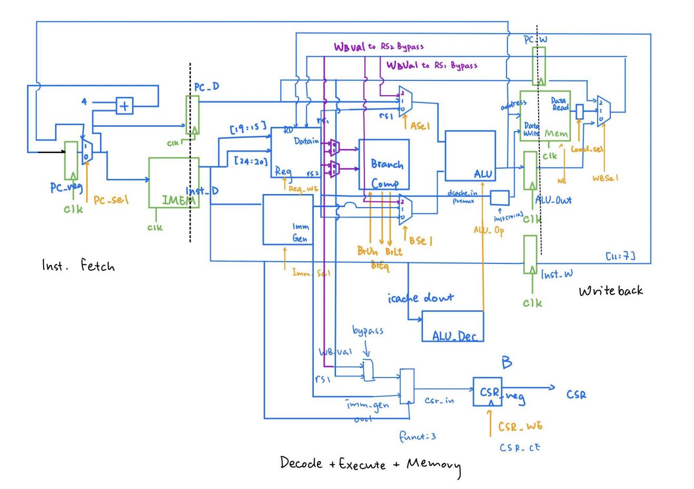
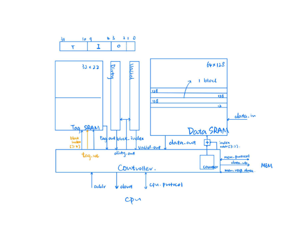

Project Review: EECS151_ASIC_CPU
This is a review of the Verilog CPU me and Yichuan Ding co-designed and developed in EECS151 ASIC lab.
Skeleton Code
Almost all module file is provided with a port skeleton, except for memloader.v, Cache.v, and RISC-V control.v. The top module, and a pretty extensive test are also predefined and can be used for our convenience.
As a result, it is unfair to say we "developed a CPU from scratch". We have a crazily solid foundation abefore we start actually implementing anything.
Design Decisions
We were tasked to design a three-stage pipelined CPU. Many other folks in our lab decided to directly persue a five-stage CPU in order to win that non-existing apple competition : /. Still, we decided to go for a simpler three-stage pipline because it will be a lot easier to debug and have way less hazards to consider.

The diagram above is the pipeline diagram we ended up using for the final design. In the initial design, we have IF, D+E, and M+WB. However, we later found out the need to put the DMEM on the brink of two pipeline stages because it is a clocked component and doesn't support asynchronous read. So we ended up having to put IMEM and DMEM on the edge between two stages to save cycles and improve performance.
A very cool part to brag about this design is the special PC register logic in the Instruction Fetching stage. We have designed it so that the mux chooses PC or the branch/jump target to feed into the IMEM and PC_D register, but the PC_reg updates its value based on either PC+4 or target+4. This way, we can (brilliantly) avoid any control hazards from branching or jump and thus avoid writing any logic for branch prediction. This design has the additional benefit of not needing to reset the PC_reg to target-4, so we kept the entire system intuitive and readable.
ALU
The first task is to design an ALU for this CPU. This is supposed to be a fairly easy task. It is mainly constituted of case and if statements. One thing we didn't debug was the SRA. Verilog only treats a shift right to be arithmetic if the number to be shifted is explicitly signed. Otherwise it will still be a logical shift, even if you used >>> instead of >> for the shift. The key difference is that SRA will put in signed bits to the left, whereas SRL will only put a bunch of zeroes.
Datapath and Control
Writing the datapath and the control logic is utterly simple. All the components are explicitly drawn, and connections are out there as well. It is more of a labor than an intellectual work to just to code down the stream.
However, because we firstly had no idea what is a CSR(Control Status Register) and decided to ignore it for now, we ran into the middle of nowhere for quite a while. Turns out the test programs utilizes the CSR to check for errors.
After finishing up the CSR, it is just a matter of labor work again to fix up the rest of the code. Of course we make terrible coding mistakes along the way, so we must do test-oriented programming, finding and fixing them manually. We fixed them in the order of arithmetic operations => load word => the rest of load instructions => store instructions. This part of debugging only took about a weekend, so it is quite a breeze comparing to what's coming next.
Cache

Cache is where we suffered the most for sure. We were asked to design and implement a direct-mapped cache that is 2kB, with each cache line 512 bits. The maximum size of a DRAM available to us, though, its only 128 bits wide (64*128), so each of the read and write operations take 4 repetitive steps to complete.
This requires us to create a counter within the cache to keep track of what is being loaded already and how many more are required. In other words, the interface between the cache and the main memory is itself another small FSM! This is an exciting observation, and we decided to create a separate module to bring this obseration to life. This leads us to the mem-loader module, the bridge between cache and main memory.
This design turns out to be fruitful in a lot of ways. Firstly, it carries out both the read and write at the same time, leaving the cache to be a black box to only needing to send requests by RW=1 or 0. Secondly, it makes the system very flexible and compatible to changes in adding additional layers of cache, or possibly swapping the lowest level of cache, while not confusing the main memory with changed requests. Lastly, this design is way easier to debug because it shows a clearer flow of signal and requests from the cache to the main memory.
When cache is firstly implemented, our previous passed tests turn out to crumble down, even those R-type instructions that should be independent of any cache changes. Turns out the instruction cache isn't behaving as espected, so we connected only the icache and connected the data cache to a golden model for debugging purposes. This lead us to easily sort out the bug and solve it.
However, icache processes no write requests, so it is considerably easier. Afterward, we need to solve for dcache and write request related bugs. Turns out the data_write_enable signal should not be impacted by the stalls. Fixing it fixed all the asm bugs, which means our cache works in some small programs for now.
Debugging Cache
The benchmark test, which are larger tests specifically for testing cache accuracy and performance, took considerably longer to run (probably hours). We were stucked here for a long time, even taking a peek at the waveform became a difficult thing. Turns out the time out cycle was set to be 5*10^n, something super large, and we ran into an infinite loop. Fixing that, we started to debug for the write back part of the cache.
Writing back is definitely the trickiest bug of the entire project. We primarily worked on a program in which 'Go Bears!' are capitialized into 'GO BEARS!'. This is actually quite fun because the waveform tool can transform series of bits into ASCII characters, and you can see all kinds of nonsenses being produced XD.
Turns out the bug is, our Cache FSM is lacking a stage of reading the right thing from the cache before writing things back. This is why you can see things like GOAB popping around our waveforms. Fixing this, and some other minor bugs in other bmark tests, gave us the desired results of passing all the bmark tests.
TODOs
I am satisfied with what we did in this project. However, our synthesis, as the final step, was unsuccessful. Despite solving all the latches and other bugs showing up in the log, we couldn't get the synthesized design to pass tests. This is quite disappointing. If given more time, we are confident that we can get the desing working in the synthesis stage. But all in all, I've surely learnt a lot from this project.